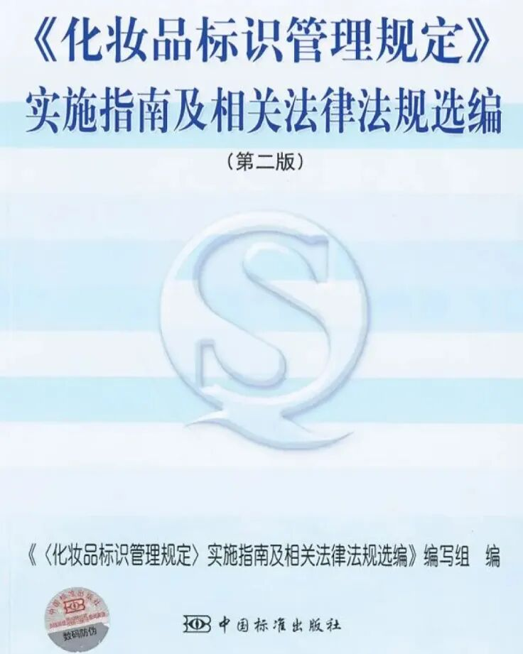
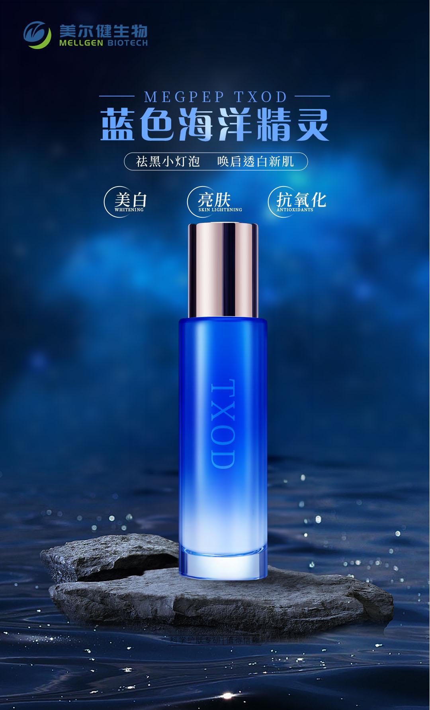
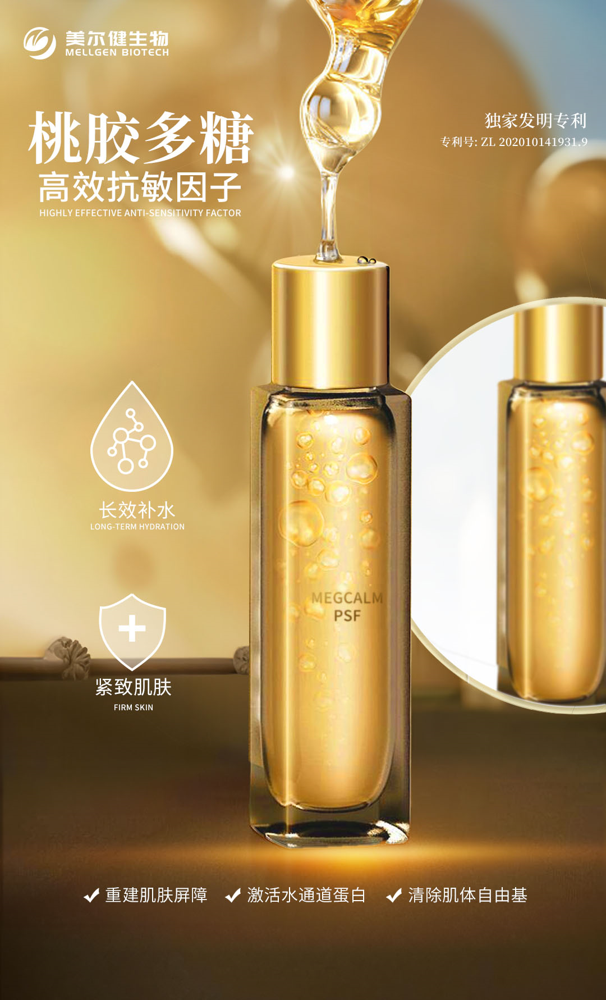
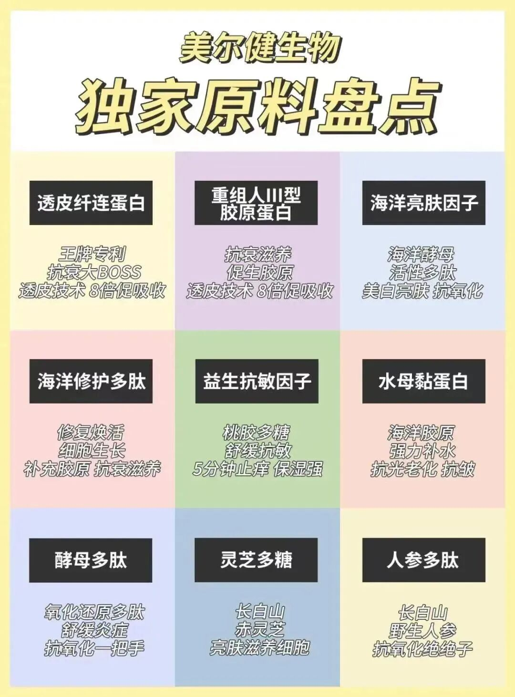

Biotechnology Co., Ltd.")

from type in Cosmetics ，via thousand years Technology and ，such as Cosmetics science science、 ， to high 。 safety full 、 Cosmetic Actives can one ， , Cosmetic Actives become for one items recombinant Content， Mellgen Biotech integrating bringing major resolve Cosmetic Actives。
in resolve Cosmetic Actives ， coming coming certification isCosmetics，Cosmetics Categories？

2007-8-27 general 《Cosmetics manager 》，Cosmeticsis using 、 scholar its type ， in position ，such as 、 、 、 and others，using to 、 、 、 and ， scholar ， for science Products。
Cosmetics type multi-， one Categories ， Categories 。
（one ） applied can Categories
can for applied Cosmetics and applied Cosmetics（ Cosmetics） major type 。its in applied Cosmetics can for type Cosmetics（such as 、 aqua 、 and others）、 manager type Cosmetics（such as aqua 、 solution and others），using and type Cosmetics（such as 、 、 and others）。
（two ） applied position Categories
can for applied Cosmetics（such as 、 and others）、 applied Cosmetics（such as aqua 、 and others）、 applied Cosmetics（such as 、 solution and others），using and applied Cosmetics（such as 、 aqua and others）。
（ ） CosmeticsFormulationsCategories
can for aqua type Products（such as aqua 、 aqua and others）、 type Products（such as 、 、 and others）、 type Products（such as 、 、 solution and others）、 Products（such as 、 and others）、 Products（such as 、 and others）、 Products（such as solution and others）、 active type Products（such as 、 solution and others）、 collagen type Products（such as 、 and others）、 collagen （such as collagen 、 and others）、 Products（such as 、 and others）、 Products（such as and others） and Products（such as 、 and others）。

such as Cosmetics， type Cosmeticsits Ingredients ， type Cosmetics its Efficacy ，its Ingredients association 。
， Cosmetic Actives applied and can ， integrating become Cosmetics Ingredients for 「 Ingredients」、「 Ingredients」 and 「functional Ingredients」 major type ：
（one ） Ingredients
Ingredientsis become Cosmetics ， in Cosmetics in major recombinant ， Cosmetics can and 。
IngredientsCategories：
Ingredientsone Ingredients、 Ingredientsand type Ingredients。
1、 Ingredients
Ingredientsis Cosmetics Ingredients， natural Ingredients and Synthetic Ingredients major type ， 、 type Ingredients、 type 、 、 and type and others。 is and general ， substance and substance 。 Ingredientsfor and Glycerin become Glycerin 。
in Productsin 、 and soft applied ， in applied Productsin Type 、 applied 。
2、 Ingredients
Ingredients for Ingredients、 Ingredientsusing and its it Ingredients，is type 、 、 and othersProducts recombinant Ingredients。
in Cosmeticsin to 、 、 、Absorption、 applied 。
3、 type Ingredients
type Ingredients aqua 、 type 、 type and type type and others。
in Cosmeticsin to resolve applied ， one can and Formulations。
（two ） Ingredients
Ingredients for Contentsubstance and （ 、 、 and others） applied Ingredients。
Ingredients in Cosmeticsin for ， applied can 。Cosmeticsin Ingredients and 、 and 、 and 、 active 、Water Solublehigh moleculesand others。
（ ）functional Ingredients
functional Ingredientsis Cosmetics can Cosmeticsfor biomanager applied Ingredients。 ：Anti-Wrinkle 、 、 manager 、 、 、 、 、 、 。
1、Anti-Wrinkle
realize on is Products one type Ingredients， from by 、Promoting Cellular bio 、 Stratum Corneum、 Collagen、 bio and others applied 。
applied Ingredients： substance （SOD）、Transdermal Fibronectin、Recombinant Human Collagen、3Dcollagen 、Youth Hydrolight Protein、collagen 、cell biology 、a- 、 bio 、 natural substance Extractsubstance 。
2、
for scienceAbsorption、substance manager ， to applied ，is Cosmeticsin Ingredients。
3、
active ， black biobecome ，using and Clear from by for black 。such as Mellgen Biotech Marine Brightening Factor，it enhance Brightening 、Whitening 、Antioxidantand othersEfficacy。

4、
A Novel functional 。
5、 、 manager
is for applied ， such as aqua、Moisturizing、Soothingand others。this type Ingredientscan Stratum Corneumin aqua in ， become 。such as Jellyfish Mucin Protein、Marine Brightening Factor、Peach Gum Polysaccharide、Glycerin、 、 、 and 、 via and others。

